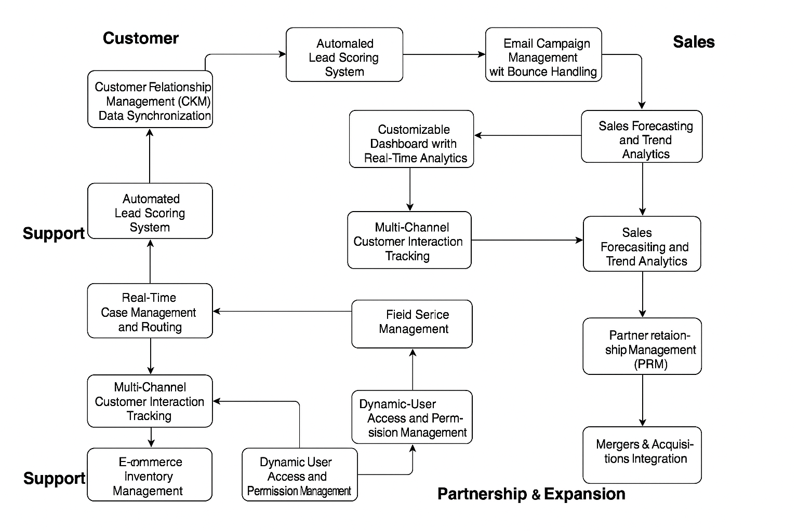

Domain Chosen: Salesforce

Salesforce Inc. is a multinational cloud-based software company that provides customer relationship management (CRM) services and a suite of enterprise applications focused on customer service, marketing automation, analytics, and application development.
Headquartered in San Francisco, California, Salesforce is known for pioneering cloud computing and revolutionizing how companies interact with their customers. The company has consistently ranked among the top Fortune Global 500 companies and drives innovation in CRM through AI, automation, and data-driven solutions.
This portfolio explores various innovative business cases that showcase how the company matches technology to stay ahead in the global market.
The following architecture diagram illustrates the structure and flow of the key business cases implemented within the Salesforce domain.
